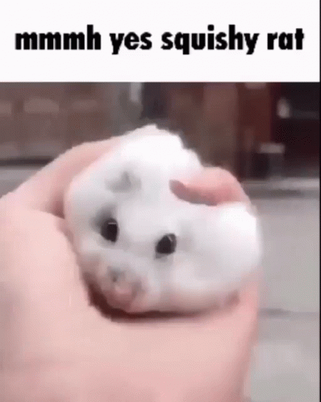

Ten Oto gif przedstawia szczura ktory jest mietolony przez czlowieka o bialej karnacji<br>/* tekst 1. JS powstał w 1995<br> 2. Bo nie musi zostać skompilowany do kodu maszynowego. <br>3. Wykonany w kliencie <br>4. Javascript ma ograniczone uprawnienia <br>5. Jest obiektowy */ <br>

< input type="button" name="przycisk" value="Nowa Strona" onclick="WinOpen(' ')"><br> tworzy przycisk o nazwie "Nowa Strona", który po kliknięciu wysyła na inną stronę <br> window.open("obraz.html","okienko","toolbar=no,directories=no,menubar=no,height=280,width=160,top=200,left=200"); <br> otwiera strone internetowa, o nazwie okienko, jest ustawione aby <br> bylo bez paska zadań, sugestii wyszukiwania i bez paska menu. rozmiary tego okna to: wysokosc 280 i dlugosc 160